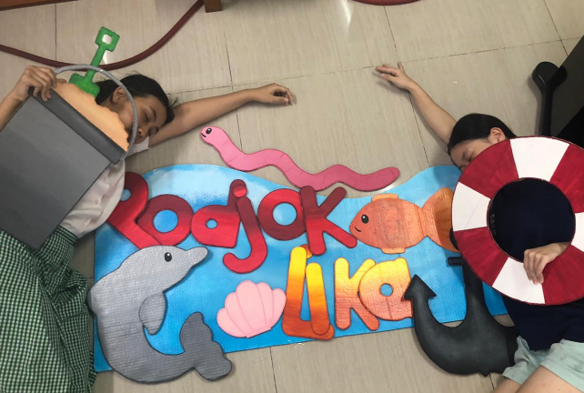
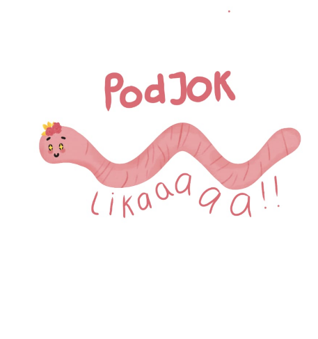
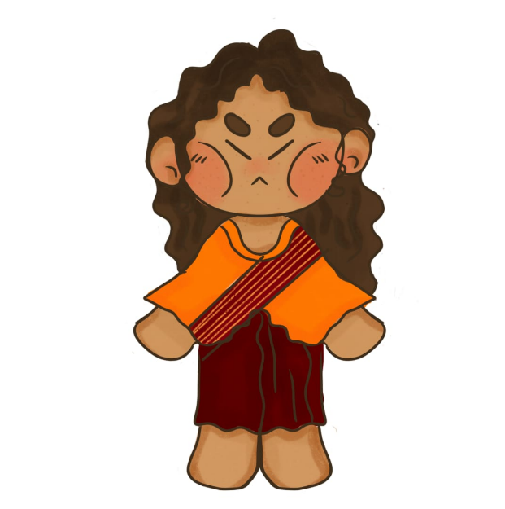

Spanduk Atas
Bagian atas kami lebih memfokuskan pada hewan hewan dan rasa laut. Bagian ini sangat selaras dengan moto kami yang ingin membawa para penggunjung ke Mandalika dan merasakan rasa tenang.

Bagian Bawah
Bagian bawah booth kami terinspirasi dari pantai Mandalika dengan menggunakan banyak aksen aksen pantai, seperti warna biru dan stir kapal.

Nyale
Nyale merupakan tokoh lain yang berperan penting dalam cerita Putri Mandalika, disini kami menganggap bahwa nyale merupakan teman-teman Lika(mascot). Nyale sendiri merupakan cacing laut, pada nyale kami ia memakai bunga cabai di atas yang merepresentasikan masyarakat Lombok

Maskot
Maskot kami sendiri menggamarkan masyarakat Lombok, khususnya suku Sasak. Maka karena kareakteristik masyarakat berkulit sawo matang dan memiliki rambut bergelombang kami membuat sang maskot begitu, dan menggunakan baju tradisional Lombok yaitu baju Lambung dengan aksen modern.